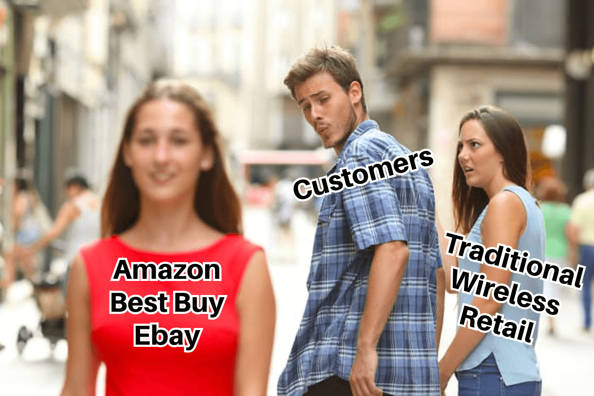
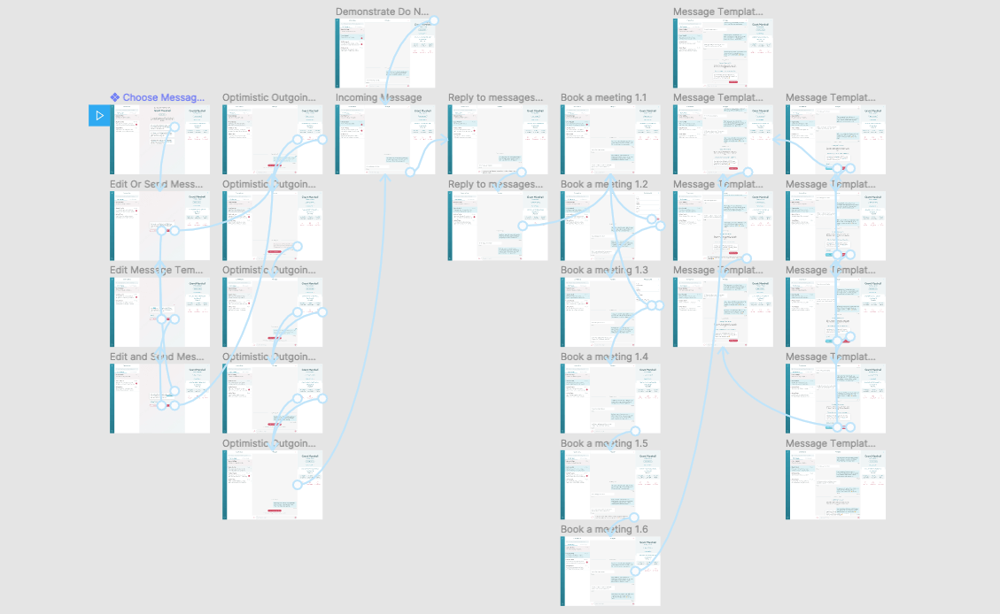
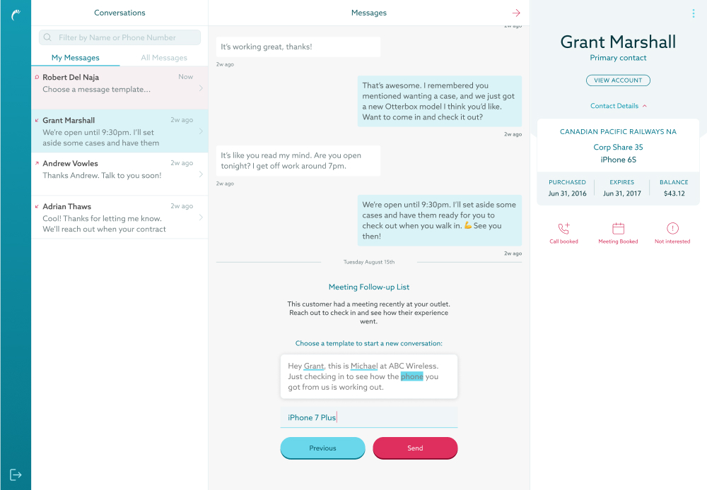
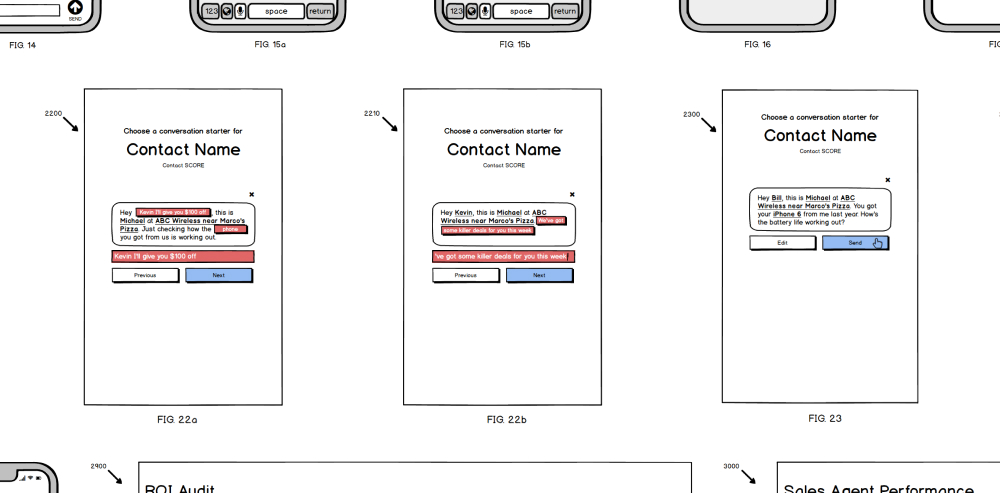

A selection of patent diagrams I created for the 1:1 Conversation product
A selection of patent diagrams I created for the 1:1 Conversation product
Matthew Pereira
Case Study:
Statflo 1:1 Conversations
A selection of patent diagrams I created for the 1:1 Conversation product
Context
I joined Statflo Inc. as the ninth full-time employee after completing a handful of freelance design and development projects with the startup's co-founders and engineers.
The company's vision was to reinvent the wireless telecom industry, which to date was focused on locking customers into long and expensive contracts... and often neglected customer service. With the rise of online marketplaces like Amazon and Ebay, and increasingly strict laws regading contracts, large carriers and small dealerships alike were struggling to retain their customers.
The first product I worked on at Statflo was a CRM enhancement that allowed wireless retail employees in dealerships and carriers across North America to view a customer profile, and make a call to that customer with a click of a button. Key to this functionality was the ability to call through the browser, or connecting the customer to a sales rep's landline or cell phone.
In-app calling was a way of merging an existing sales process into our CRM product to create additional value, and created a record of every call for auditing and statistical analysis. This was a huge added value for our data-oriented customers, and gave Statflo a lot of data to learn from as well. Once we had this functionality in our product, however, it was time to take on something completely new.
Opportunity
Through our other tools like in-app calling, we had the data to prove a direct correlation between frequency of contact, customer satisfaction, and increased sales numbers. However, customers were also asking for asynchronous communication, because they were distrustful of sales calls and hated being put on hold. These reasons topped the list of many others all pointing to an SMS product being a strong opportunity for our startup.
Our team was betting on text messaging being the next big thing.
Staff in wireless retailers are often 17-23 year olds who are much more accomplished at texting than opening up a conversation over the phone. While voice communications are critical for some sales situations, they're often seen to be too intrusive for account-related conversations or friendly check-ins. Our leadership team wanted us to have the first sales tool in the industry with the ability to capitalize on all this by adding one-to-one conversations via SMS to our existing value proposition.
Problem Discovery
With the help of the company CEO and leadership team, I floated the idea past a few key dealership contacts to learn more about some of the antigoals and constraints we would have to keep in mind for our first iteration. This part of the process also involved building a comprehensive persona representing the sales representatives that would be using this product. We whiteboarded the results of each conversation, giving us direction and validating our ideas with evidence to back up each insight we produced. Our primary persona was a sales associate who needed a painless way to keep up with customers via text-message while also juggling the duties of managing the store at the same time.
{kind=link}
{kind=link}
There were technical issues to keep in mind with how I first prototyped and tested the new feature as well. I was lucky to have a close working relationship with two coworkers who would serve to drive out the service architecture, a database schema, and push back on ideas I had in order to limit the scope and drive out a user journey that would delight our customers without setting the small engineering team at the company up for any insurmountable difficulty in the future.
By the end of this stage we had a well defined brief for our MVP with prioritized user stories (simplified here).
{kind=link}
Prototyping
To further validate the idea, I built a dummy prototype in React.js, HTML, and CSS, rigging it to reply to user input with responses from a preset script. This helped me demonstrate the functionality involved and build a narrative for the product without requiring any backend services to support it. After a round of feedback, the next 'prototype' was a single page webapp that customers could open on their own phones, type mssages, and interact with a bot to discover the different workflows that our fledgling product was proposing.
{kind=link}
{kind=link}
The best part about this approach was that I could reuse and iterate on each javascript component that I built as I collaborated with other engineers to gradually build up a database, message queue, login system, and API connections to start actually sending text messages. While we designed the front end of the product and the user experience, we were also creating a new sales process for store associates to use, an entirely new database schema, authentication workflows, and microservices to queue and deliver messages via the the Twilio API.
 Feedback coming through the first live prototype
Feedback coming through the first live prototype
We put up a version that our initial stakeholders could use to actually text their own phones.
Customers liked it! They got excited to start adopting it as a part of their sales and customer outreach processes before it was even fully functional.
Iterating on the MVP
As the project grew, it evolved from a skunkworks-style experiment to something the company could staff full time. I started to work shoulder-to-shoulder with a dedicated product manager, as both lead designer and lead front-end engineer, creating a fast feedback loop. We could implement a change in the morning, ship it before lunch, and collect feedback in the afternoon to iterate on the following day.

Clickable, screen-fidelity prototype built in Figma, showing an outgoing message workflow from start to finish
{kind=link}
In doing so, we developed a short list of key customers to act as alpha testers on our prototype version. These customers put one or two sales representatives on the project at first, and helped us iron out bugs as well as develop the sales tactics and microcopy that was crucial for making the product both effective and easy to use.
We quickly discovered new patterns that we weren't expecting through this feedback loop: while we were envisioning our product as a mobile app used on the floor of carrier and dealer level stores, our customers were having so much success withit they were starting to use it on desktop computers in call-center environments to maximize how many messages they could send. We swiftly pivoted to expand the responsive design to work across multiple devices.
At this stage we were ready to commit to a more polished UI, and I developed a UI kit in Figma that we could use to quickly draft new ideas. This made it possible to make swift design decisions with our internal team and alpha testers alike.
As the core functionality stabilized and we turned our attention to other concerns, this UI kit made it possible to validate or invalidate more of our ideas without needing to write and ship new code.
Scale and Integrate
Once we had a working prototype, interested customers, and a development team ready to tackle the project, it was time to grow. As the lead designer, I worked shoulder-to-shoulder a project manager and software architect to maintain legal compliance while we designed the microservices and database system that would power the final product. With each iteration, we were also discovering key functionality that would be required to make it customer-ready before general availability.

The desktop conversations client, with conversation switcher, message feed, conversation starters, and customer info panel displayed.
{kind=link}
After introducing our beta to a major Statflo customer, we were met with so much enthusiasm that it took us by surprise: they wanted to roll out a dedicated full-time 1:1 conversations team.
My prototype had been built responsively, meant to adapt to different screen sizes, but at this stage I needed to launch an effort to discover what it would look like to add dedicated desktop functionality. Sales representatives needed key data points at their fingertips to be successful; as a team, we had to adapt sales lists, funnel management, escalation rules, and other concepts to turn our beta into a fully functional GA product.Starting with new designs in Figma, then moving to code with the help of other developers on the team, I created new views and workflows for the product, including dedicated happy paths for salespeople and managers, a conversation switcher component for quickly jumping from conversation to conversation as new messages came in, and the ability to manually or automatically reassign conversations when a salesperson was on break, had a day off, or otherwise wasn't available. This meant that customers spent less time waiting, and would never be left hanging without a response.
Get Smart
Along the way there was also a lot to learn about handling errors in a text-messaging system. Users needed notifications when messages weren't sent correctly, and the product needed a way to retry both automatically and manually in case of a problem with a store's related service accounts.

Sharpie-fidelity wireframes planning out revised conversation starter functionality on desktop, with inline validation for different data types.
{kind=link}
We also developed a system of templated messages for contacting new customers. These 'conversation starters' could be predefined by dealerships, but Statflo could also tweak, A/B test, and then push the conversation starters that saw the most success based on our statistical analysis industry-wide. As the product grew, we learned to associate the conversation starter most likely to convert to a sale or renewal for any given demographic of customers - new, old, loyal, unhappy, and so on.
As a side project, I was able to integrate the open source AlexJs libary to catch and warn against offensive or insensitive language, first to guard against salespeople mistakenly saying the wrong thing, and eventually to automatically filter out offensive content from ever getting back to the salespeople from rude customers.
What we learned
1:1 conversations drive more sales
Now, with the addition of data from text messaging, we could validate our original hypotheses. Using our conversations products, retailers saw a minimum of 5x increase in their conversion rates when compared to their traditinal tactics. Our top dealerships (the same ones who dedicated whole teams to the product), saw as high as a 13x increase in conversions. The more messages that were sent, the higher sales figures would grow.
It works, but it's not always easy
We could now measure the exact amount of time it took to get from a post-sale check-in to an upsell or accessory purchase, and connect conversations to store visits. Sales reps loved it! But not everything was perfect: there's an art to conversation, and despite that overall conversions were up, some salespeople had difficulty holding their customers' attention, or closing sales with the same speed as our top users. Using our new data on what works, and what doesn't, our customer success teams started developing educational content to help train all Statflo dealerships on how to start new conversations and close sales.
We weren't limited to Wireless Retail
We had a significant lead over all of our competitors, and that made it crucial to keep growing. Alongside refining our user experience for the wireless industry, we also launched an effort to create a Salesforce integration to further develop the product as an independant platform that could be purchased separately from our CRM software, and re-targeted to different industries in North America and Europe.
Learn More
See the latest iteration of the 1:1 conversations product, branded Statflo Textkit. When you're ready, click here to choose from other case studies.
© 2022. All rights reserved.